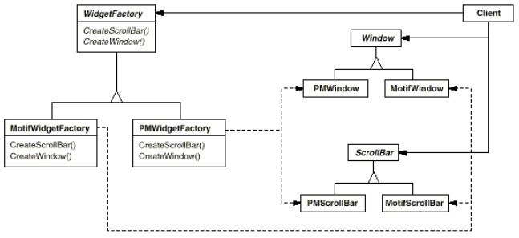
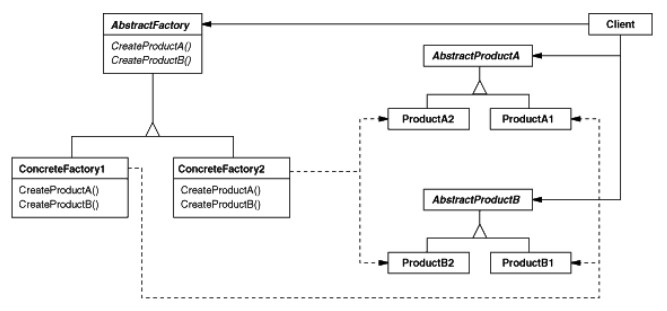

Exemple (look and feel)
Lorsque swing fournit plusieurs look and feel (laf), le code client (le code que nous, utilisateurs de swing, écrivons) ne dépend pas du laf courant.Exemple avec 2 laf : PM (Presentation Manager) et Motif  (PM = Presentation Manager)
Implémentation java :
- Avec classes : ExempleGOF1.java
- Avec interfaces : ExempleGOF2.java
Remarquer dans main() les seuls endroits où l'implémentation concrète est évoquée.
WidgetFactory factory1 = new LinuxFactory(); // ... WidgetFactory factory2 = new MacFactory();Tout le reste du code ignore l'implémentation utilisée.
Remarquer aussi l'utilisation de factory methods dans les fabriques abstraites et concrètes.
Structure
Diagramme gof :  Traduction java du diagramme :- DiagrammeGOF1.java (abstract products et abstract factory sont des interfaces)
- DiagrammeGOF2.java (abstract products et abstract factory sont des classes abstraites).
Remarquer l'intérêt qu'il peut y avoir à utiliser des classes abstraites plutôt que des interfaces pour les
AbstractProduct (dans l'exemple, pour factoriser la méthode toString()).
Des classes abstraites sont souvent utilisées en fournissant des méthodes vides, ce qui permet de n'avoir à implémenter que les méthodes utiles lorsqu'on crée un nouveau produit.
Remarques
- Abstract factory renforce les dépendances entre objets d'une même famille.Par exemple, une
MotifWindow doit être utilisé avec une MotifScrollBar.
Cette contrainte est une conséquence naturelle de l'utilisation de la fabrique concrète Motif.
- On peut changer facilement au runtime la famille de produit utilisée.
- Ajouter de nouveaux produits aux familles n'est pas simple, car il faut faire évoluer
AbstractFactory, ce qui implique potentiellement de retoucher à toutes les ConcreteFactory.
- En général une application n'a besoin que d'une instance de
ConcreteFactory à la fois, donc souvent implémenté avec un singleton.
- S'il y a beaucoup de familles,
ConcreteFactory peut être implémenté en utilisant un prototype.
La
ConcreteFactory est initialisée avec une instance de chaque produit de la famille et crée un nouveau produit par clonage.
Elimine le besoin d'une
ConcreteFactory pour chaque famille.
Abstract factory vs Factory Method
The Abstract Factory pattern is very similar to the Factory Method pattern. The main difference between the two is that with the Abstract Factory pattern, a class delegates the responsibility of object instantiation to another object via composition whereas the Factory Method pattern uses inheritance and relies on a subclass to handle the desired object instantiation(www.buyya.com) En utilisant Abstract Factory, la classe
MazeGame délègue à ses sous-classes la création des objets.
Avec Factory method, elle délègue la création à la concrete factory passée en paramètre.
Cette différence se retrouve dans les schémas GOF :
-
Dans le schéma de Factory Method, le code client se trouve dans la classe
Creator, et seules les opérations de création sont déléguées aux sous-classes.
On retrouve la même chose dans l'exemple du labyrinthe : la classeMazeGame(Creator) contient du code utilisant la création :createMaze()(correspond àAnOperation()dans le schéma). - Dans le schéma de Abstract Factory, le code client est complètement dissocié de la création, et est obligé de créer une concrete factory, à laquelle il délègue la création des objets.
Exemple (labyrinthe)
On se place aussi dans le cas où on veut créer deux variantes du jeu (EnchantedMazeGame et BombedMazeGame).Exercice
Voir l'implémentation java du labyrinthe et identifier les différents acteurs du pattern abstract factory.
Comparer les implémentations Factory method et Abstract factory, analyser les différences.
Voir l'implémentation java du labyrinthe et identifier les différents acteurs du pattern abstract factory.
Comparer les implémentations Factory method et Abstract factory, analyser les différences.
Abstract factory
Dans main()
// dans ce pattern la fabrique abstraite est MazeGame
var mazeGame =
new maze.patterns.abstractfactory.MazeGame();
Maze maze;
// jeu standard
var factory1 =
new maze.patterns.abstractfactory.MazeFactory();
maze = mazeGame.createMaze(factory1);
// jeu enchanted
var factory2 =
new maze.patterns.abstractfactory.EnchantedMazeFactory();
maze = mazeGame.createMaze(factory2);
MazeGame :
public class MazeGame{
public Maze createMaze(MazeFactory factory){
Maze aMaze = factory.makeMaze();
Room r1 = factory.makeRoom(1);
Room r2 = factory.makeRoom(2);
Door aDoor = factory.makeDoor(r1, r2);
aMaze.addRoom(r1);
// ...
return aMaze;
}
}
Création des objets (défaut) :
// Dans Abstract Factory, pas de création par défaut
// Le jeu classique correspond à une factory
public class MazeFactory{
public static Maze makeMaze(){
return new Maze();
}
public static Room makeRoom(int n){
return new Room(n);
}
// ...
}
Création des objets (spécialisation) :
public class BombedMazeFactory extends MazeFactory{
public static Room makeRoom(int n){
return new RoomWithBomb(n);
}
public static Wall makeWall(){
return new BombedWall();
}
}
Factory method
Dans main()
Maze maze;
// jeu standard
var game1 =
new maze.patterns.factorymethod.MazeGame();
maze = game1.createMaze();
System.out.println(maze);
// jeu enchanted
var game2 =
new maze.patterns.factorymethod.EnchantedMazeGame();
maze = game2.createMaze();
System.out.println(maze);
MazeGame :
public class MazeGame{
public static Maze createMaze(){
Maze aMaze = makeMaze();
Room r1 = makeRoom(1);
Room r2 = makeRoom(2);
Door theDoor = makeDoor(r1, r2);
aMaze.addRoom(r1);
// ...
return aMaze;
}
}
Création des objets (défaut) :
public class MazeGame{
// ...
// factory methods qui peuvent être overridées
public static Maze makeMaze(){
return new Maze();
}
public static Room makeRoom(int n){
return new Room(n);
}
// ...
}
Création des objets (spécialisation) :
public class BombedMazeGame extends MazeGame{
public static Room makeRoom(int n){
return new RoomWithBomb(n);
}
public static Wall makeWall(){
return new BombedWall();
}
}